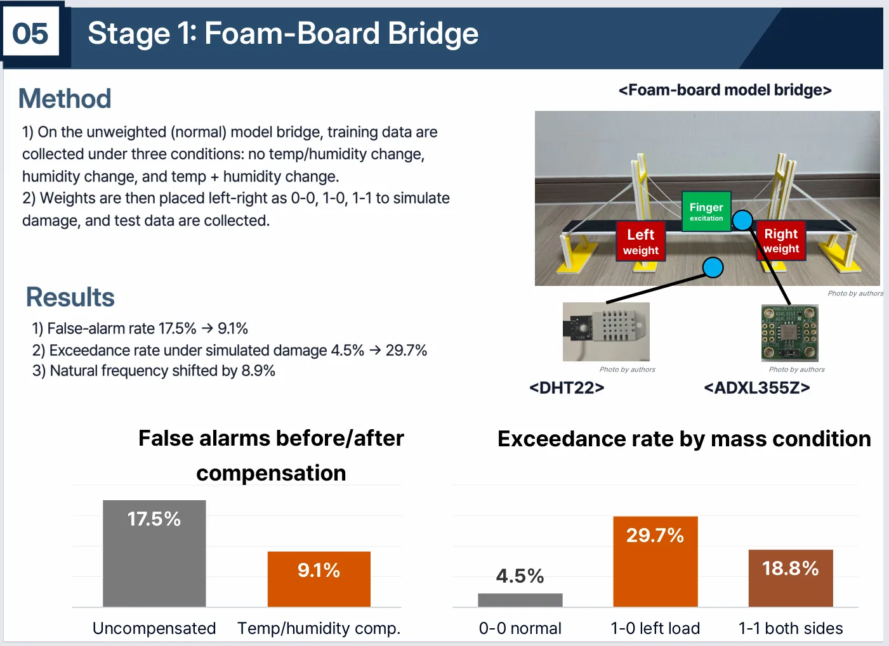

v1 · Round 1 · June 2026
Foam-board model bridge
- Proof that the whole pipeline — collect, compensate, detect, explain — runs on a ~₩190k node.
- Compensation cut false alarms in the humidity segment 17.5% → 9.1%.
- Under simulated damage, threshold exceedance rose 4.5% → 29.7%.